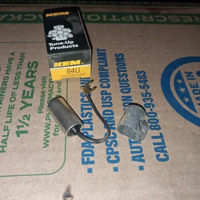
Ignition Condensers
1960-1976 KEM 84U Condenser Chevrolet Chevelle C10 Pickup GMC C15/C1500 Pickup
84U
Fits 1964-1974 Pontiac LeMans · 1963-1974 Chevrolet C10 Pickup (1719 listed)
$16.99
View details148 parts whose listing names at least one Pontiac vehicle, mostly engine parts, ignition & tune-up and air filters. Fit depends on year, model and engine, so check the full vehicle list on each part page or message us before you buy.
148 parts
Online checkout through Square. Ships from Carbondale, PA, or pick up by confirmed appointment only. Fitment question? Message us.

84U
Fits 1964-1974 Pontiac LeMans · 1963-1974 Chevrolet C10 Pickup (1719 listed)
$16.99
View details
W292X
Fits 1985-1988 Pontiac Firefly · 1985 Pontiac Sunburst (453 listed)
$13.99
View details
AR167
Fits 1982-1991 Pontiac 6000 · 1982-1987 Pontiac Bonneville (2677 listed)
$12.99
View details
AR178
Fits 1982-1991 Pontiac 6000 · 1982-1987 Pontiac Bonneville (2746 listed)
$15.99
View details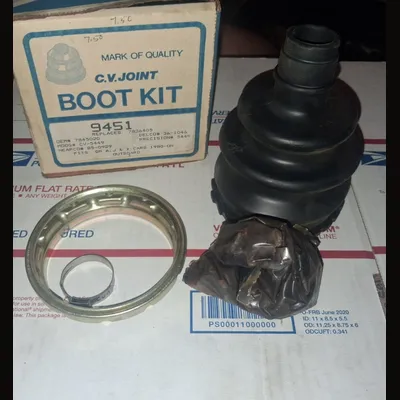
9451
Fits 1980-1984 Pontiac Phoenix · 1980-1985 Buick Skylark (228 listed)
$25.99
View details
E220X
Fits 1980-1986 Pontiac Firebird · 1980-1986 Pontiac Bonneville (1750 listed)
$25.00
View details
EG1092HD
Fits 1985 Pontiac 6000 · 1985 Pontiac Bonneville (1904 listed)
$15.99
View details
1443X
Fits 1982-1984 Pontiac Firebird · 1982-1984 Pontiac 6000 (569 listed)
$12.99
View details
E224X
Fits 1982-1986 Pontiac 6000 · 1982-1984 Pontiac Firebird (713 listed)
$25.00
View details
E240
Fits 1982-1986 Pontiac 6000 · 1984 Pontiac Fiero (1168 listed)
$19.99
View details
1285X
Fits 1985-1986 Pontiac Fiero · 1985-1986 Pontiac Firebird (99 listed)
$14.99
View details
1289
Fits 1991-1995 Pontiac Trans Sport · 1991-1995 Chevrolet Lumina APV (27 listed)
$19.99
View details
R514
Fits 1982-1986 Pontiac Bonneville · 1982-1997 Pontiac Firebird (2492 listed)
$24.99
View details
DR-318X
Fits 1974-1992 Pontiac Firebird · 1979-1984 Cadillac DeVille (707 listed)
$12.99
View details
08541
Fits 1980 Pontiac Bonneville · 1975 Pontiac Firebird (552 listed)
$9.99
View details
14082
Fits 2007-2010 Pontiac G3 · 2005-2008 Pontiac Wave (2063 listed)
$12.99
View details
16115
Fits 2007-2010 Pontiac G5 · 2005-2010 Pontiac G6 (881 listed)
$9.99
View details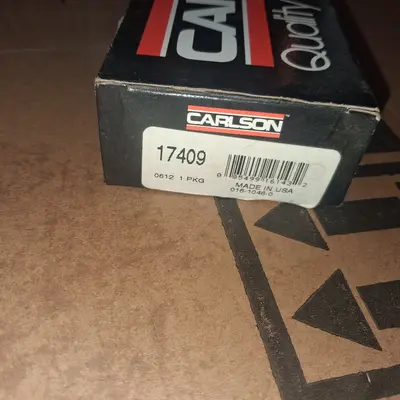
17409
Fits 2007-2010 Pontiac G3 · 2005-2008 Pontiac Wave (167 listed)
$13.99
View details
H2148-2
Fits 1967-1978 Pontiac Firebird · 1975-1986 Chevrolet C10 (1541 listed)
$9.99
View details
H2622
Fits 1985-1986 Pontiac Bonneville · 1985-1997 Pontiac Firebird (1784 listed)
$16.99
View details
H2623
Fits 1985-1986 Pontiac Bonneville · 1985-1997 Pontiac Firebird (60 listed)
$10.99
View details
H2644
Fits 1991-1999 Pontiac Bonneville · 1999-2000 Pontiac Grand Am (490 listed)
$16.99
View details
H5056
Fits 2000-2005 Pontiac Bonneville · 1994-1996 Pontiac Grand Prix (296 listed)
$16.99
View details
H5065
Fits 2000-2002 Pontiac Bonneville · 1997-2003 Pontiac Grand Prix (257 listed)
$12.99
View details
H5074
Fits 1998-2002 Pontiac Firebird · 2008-2009 Pontiac G8 (323 listed)
$12.99
View details
H5095
Fits 2005-2008 Pontiac Grand Prix · 2006-2022 Dodge Charger (1284 listed)
$13.99
View details
H5107-2
Fits 1976-1980 Pontiac Sunbird · 1976-1980 Buick Skyhawk (194 listed)
$9.99
View details
H5416
Fits 1982-1990 Pontiac 6000 · 1982-1986 Pontiac Bonneville (3000 listed)
$6.99
View details
H5539
Fits 1969-1973 Pontiac GTO · 1973 Pontiac Grand Am (3000 listed)
$19.99
View details
H5604
Fits 1991 Pontiac 6000 · 1990-1991 Pontiac Bonneville (786 listed)
$11.99
View details
H5614Q
Fits 2000-2005 Pontiac Bonneville · 1994-1996 Pontiac Grand Prix (28 listed)
$25.49
View details
H5631Q
Fits 1999-2005 Pontiac Grand Am · 2004-2005 Chevrolet Classic (10 listed)
$12.99
View details
H5632Q
Fits 2000-2002 Pontiac Bonneville · 1997-2003 Pontiac Grand Prix (258 listed)
$15.99
View details
H7270
Fits 1987-1990 Pontiac Bonneville · 1987-1990 Buick Electra (157 listed)
$12.99
View details
H7281
Fits 1985-1998 Pontiac Grand Am · 1982-1983 Pontiac J2000 (1619 listed)
$12.99
View details
H7313
Fits 2001-2002 Pontiac Sunfire · 2001-2002 Chevrolet Cavalier (43 listed)
$21.99
View details
H7316
Fits 2001-2005 Pontiac Aztek · 2006 Pontiac Torrent (36 listed)
$19.99
View details
H9457
Fits 1971-1977 Pontiac Bonneville · 1971-1977 Pontiac Catalina (2951 listed)
$9.99
View details
16213372
Fits Pontiac
$64.99
View details
55114
Fits 1981 Pontiac Grand Prix · 1982-1986 Buick LeSabre (109 listed)
$29.99
View details
931-134
Fits 2006-2009 Pontiac Torrent · 2005-2009 Chevrolet Equinox (28 listed)
$105.99
View details
6-3765RA
Fits 1982-1989 Pontiac 6000 · 1982-1989 Chevrolet Celebrity (208 listed)
$19.99
View details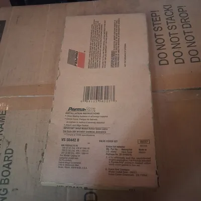
VS50442R
Fits 2001-2005 Pontiac Aztek · 2005-2010 Pontiac G6 (711 listed)
$23.99
View details
74691
Fits 1976-1990 Pontiac · 1976-1990 Buick (10 listed)
$39.99
View details
33189
Fits 1980-1986 Pontiac Firebird · 1978-1979 Pontiac Sunbird (510 listed)
$16.95
View details
33258
Fits 2007-2008 Pontiac G3 · 1985-1986 Pontiac 6000 (1572 listed)
$17.98
View details
33419
Fits 1987-1991 Pontiac Tempest · 1987-1991 Chevrolet Cavalier (116 listed)
$12.99
View details
33529
Fits 1984-1988 Pontiac Fiero · 1985-1989 Pontiac Grand Am (756 listed)
$16.98
View details
10324036
Fits 2001-2006 Pontiac Montana · 2005-2007 Buick Terraza (94 listed)
$59.99
View details
12618735
Fits 2007-2009 Pontiac G6 · 2008-2014 Chevrolet Express 1500 (97 listed)
$37.99
View details
20516001
Fits 1982-1983 Pontiac J2000 (38 listed)
$24.99
View details
25554845
Fits 1992-1999 Pontiac Bonneville (34 listed)
$24.99
View details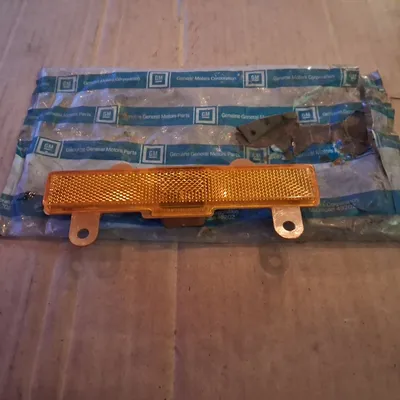
918367
Fits 1982-1983 Pontiac J2000 · 1985 Pontiac J2000 Sunbird (114 listed)
$34.99
View details
CPA-145
Fits 1975-1984 Pontiac Firebird · 1976-1984 Pontiac Grand Prix (1558 listed)
$19.99
View details
CPA236
Fits 1977-1984 Pontiac Bonneville · 1975-1981 Pontiac Firebird (1042 listed)
$19.99
View details
FL20
Fits 1970-1978 Pontiac Firebird · 1969-1978 Chevrolet Camaro (906 listed)
$12.99
View details
D1918
Fits 1980-1981 Pontiac Firebird · 1978-1981 Buick Regal (305 listed)
$60.99
View details
D1952
Fits 1981-1986 Pontiac Firebird · 1987-1990 Cadillac Brougham (235 listed)
$39.99
View details
D423R
Fits 1967-1974 Pontiac Firebird · 1970-1974 AMC Gremlin (210 listed)
$9.99
View details
Fits 1974-1995 Pontiac · 1974-1995 Chevrolet (8 listed)
$14.99
View details
D433HP
Fits 1974-1995 Pontiac · 1974-1995 Chevrolet (8 listed)
$14.99
View details
D439HP
Fits 1985-1992 Pontiac Firebird · 1988-1995 Chevrolet C1500 (91 listed)
$14.99
View details
PV184
Fits 1977-1992 Pontiac Firebird · 1988-1995 Chevrolet C1500 (467 listed)
$9.99
View details
TS103
Fits 1980-1984 Pontiac Phoenix · 1982-1988 Chevrolet Celebrity (277 listed)
$9.99
View details
342G
Fits 1985-1986 Pontiac 6000 · 1985-1988 Pontiac Fiero (1941 listed)
$24.99
View details
342H
Fits 1987-1992 Pontiac Bonneville · 1989 Pontiac Firebird (235 listed)
$69.99
View details
AR174
Fits 1982-1988 Pontiac 6000 · 1981 Pontiac Bonneville (1481 listed)
$12.99
View details
AR175
Fits 1982-1986 Pontiac 6000 · 1984-1986 Pontiac Fiero (596 listed)
$36.20
View details
DS118
Fits 1978-1986 Pontiac Bonneville · 1978-2002 Pontiac Firebird (3000 listed)
$28.46
View details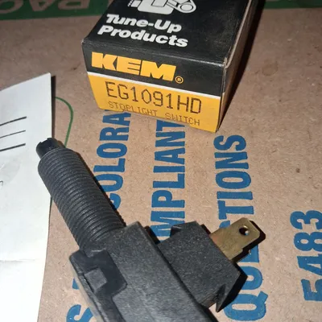
EG1091HD
Fits 1968-1985 Pontiac Firebird · 1968-1985 Pontiac Grand Prix (2997 listed)
$16.99
View details
780067
Fits 1985-1986 Pontiac 6000 · 1985-1988 Pontiac Fiero (418 listed)
$49.99
View details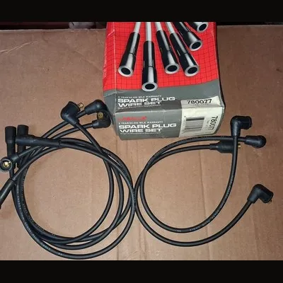
780077
Fits 1961-1963 Pontiac Tempest · 1969-1970 Chevrolet Nova (120 listed)
$45.99
View details
780082
Fits 1987-1991 Pontiac 6000 · 1987-1988 Pontiac Fiero (172 listed)
$34.99
View details
780408
Fits 1988-1992 Pontiac Bonneville · 1992 Pontiac Trans Sport (107 listed)
$39.99
View details
780416
Fits 1987-1988 Pontiac Tempest · 1987-1988 Cadillac Cimarron (30 listed)
$39.99
View details
780427
Fits 1987-1988 Pontiac Bonneville · 1985-1992 Pontiac Grand Am (369 listed)
$48.99
View details
7073
Fits 1980-1984 Pontiac Phoenix · 1982-1984 Buick Skyhawk (224 listed)
$12.99
View details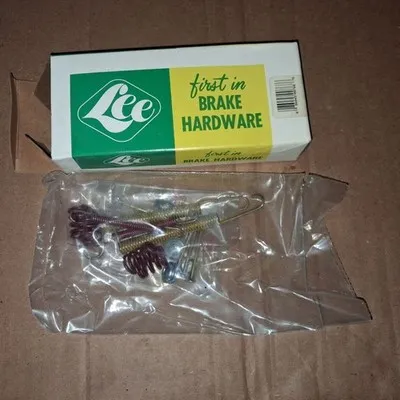
7081
Fits 1987-1991 Pontiac Bonneville · 1987-1990 Buick Electra (139 listed)
$15.99
View details
BS 301
Fits 1982-1984 Pontiac Phoenix · 1983-1984 Chevrolet Cavalier (104 listed)
$15.99
View details
DS899
Fits 1977-1981 Pontiac Bonneville · 1977-1989 Buick Electra (1120 listed)
$34.99
View details
901951
Fits 1985-1998 Pontiac Grand Am · 1986-1994 Pontiac Sunbird (1274 listed)
$24.99
View details
CV5463
Fits 1985-1991 Pontiac 6000 · 1987-2005 Pontiac Bonneville (2793 listed)
$19.99
View details
CV5865
Fits 1985-1988 Pontiac Sunburst · 1985-1988 Chevrolet Spectrum (54 listed)
$22.99
View details
3357
Fits 1984-1987 Pontiac Fiero · 1981-1987 Pontiac T1000 (155 listed)
$14.99
View details
PT-1372
Fits 1984 Pontiac Fiero · 1982-1984 Pontiac Firebird (288 listed)
$12.99
View details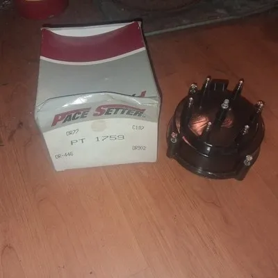
PT-1759
Fits 1975-1976 Pontiac Firebird · 1975 Buick Apollo (92 listed)
$15.99
View details
PT-1772
Fits 1987-1989 Pontiac Grand Am · 1982-1983 Pontiac J2000 (334 listed)
$19.99
View details
PT285
Fits 1975-1988 Pontiac Firebird · 1976-1987 Pontiac Grand Prix (2027 listed)
$34.99
View details
PT811
Fits 1968-1972 Pontiac Firebird · 1968-1972 Pontiac GTO (830 listed)
$79.99
View details
DR630
Fits 1977-1981 Pontiac Phoenix · 1977-1980 Pontiac Sunbird (104 listed)
$19.99
View details
62-402
Fits 1978-1979 Pontiac Sunbird · 1976-1977 Chevrolet Nova (119 listed)
$24.99
View details
66153
Fits 2004-2005 Pontiac Bonneville · 2004-2008 Pontiac Grand Prix (66 listed)
$14.99
View details
66834
Fits 2003-2008 Pontiac Vibe · 2003-2008 Toyota Corolla (43 listed)
$12.99
View details
66902
Fits 2008-2010 Pontiac G6 · 2006-2009 Pontiac Torrent (210 listed)
$12.99
View details
67064
Fits 2009-2010 Pontiac Vibe · 2010-2017 Toyota Camry (144 listed)
$11.99
View details
69104
Fits 2009-2010 Pontiac Vibe · 2009-2019 Toyota Corolla (251 listed)
$21.08
View details
214-1132
Fits 1981-1984 Pontiac Grand Prix · 1980-1987 Buick Electra (713 listed)
$22.49
View details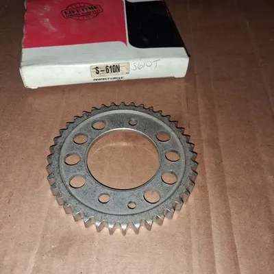
S-610N
Fits 1980-1988 Pontiac Bonneville · 1977-1980 Pontiac Catalina (927 listed)
$18.38
View details
PV-679
Fits 1970-1980 Pontiac Catalina · 1968-1980 Buick LeSabre (221 listed)
$9.99
View details
220-1025
Fits 1995-1997 Pontiac Sunfire · 1993-1996 Buick Century (117 listed)
$29.99
View details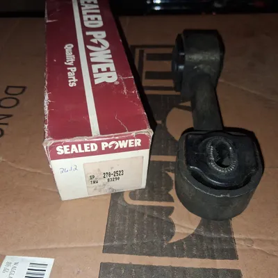
270-2523
Fits 1988-1994 Pontiac Grand Prix · 1988-1995 Buick Regal (299 listed)
$22.99
View details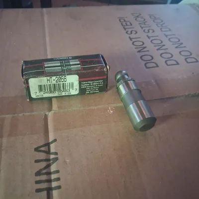
HT-2056
Fits 1976-1987 Pontiac Acadian · 1987-1989 Pontiac Grand Am (565 listed)
$11.99
View details
D1980
Fits 1985-1986 Pontiac Firebird · 1985-1990 Chevrolet Astro (112 listed)
$39.99
View details
DR-320
Fits 1982-1984 Pontiac Firebird · 1982-1986 Buick Century (402 listed)
$9.99
View details
DR-325
Fits 1985-1986 Pontiac 6000 · 1985-1986 Pontiac Fiero (503 listed)
$12.50
View details
DR318
Fits 1974-1992 Pontiac Firebird · 1979-1984 Cadillac DeVille (707 listed)
$11.99
View details
DR447
Fits 1977 Pontiac Catalina · 1977 Pontiac Firebird (127 listed)
$39.99
View details
DR460
Fits 1985-1992 Pontiac Firebird · 1986-1995 Chevrolet Astro (2122 listed)
$19.99
View details
JH-167
Fits 1994-2000 Pontiac Firefly · 1998-2000 Chevrolet Metro (69 listed)
$24.99
View details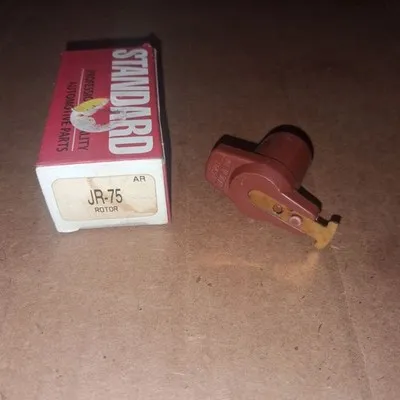
JR-75
Fits 1985-1988 Pontiac Firefly · 1985 Pontiac Sunburst (495 listed)
$9.99
View details
LX-338
Fits 1986-1987 Pontiac Grand Am · 1986-1988 Buick Century (57 listed)
$79.99
View details
LX-339
Fits 1985-1986 Pontiac 6000 · 1985-1986 Pontiac Fiero (250 listed)
$37.99
View details
LX-342
Fits 1985-1986 Pontiac 6000 · 1986 Pontiac Bonneville (3000 listed)
$22.50
View details
LX-346
Fits 1993-1995 Pontiac Firebird · 1994-2005 Pontiac Grand Am (477 listed)
$69.99
View details
DR-39
Fits 1987-1991 Pontiac 6000 · 2001-2005 Pontiac Aztek (2075 listed)
$29.99
View details
JR101
Fits 1986-1988 Pontiac Sunburst · 1986-1988 Chevrolet Spectrum (429 listed)
$9.99
View details
PC7
Fits 1987-1991 Pontiac 6000 · 1990-1992 Pontiac Firebird (691 listed)
$19.99
View details
RY-113
Fits 1983-1987 Pontiac 6000 · 1985-1987 Pontiac Fiero (834 listed)
$14.99
View details
PS-129
Fits 1980-1985 Pontiac Bonneville · 1978-1981 Pontiac Catalina (2333 listed)
$13.99
View details
PS-241
Fits 1982-1991 Pontiac 6000 · 1985-1988 Pontiac Fiero (857 listed)
$49.99
View details
TS76
Fits 1981-1992 Pontiac Firebird · 1979-1988 Buick Century (1385 listed)
$16.99
View details
V187
Fits 1980-1987 Pontiac Acadian · 1981-1987 Pontiac T1000 (85 listed)
$9.99
View details
V243
Fits 1992-2005 Pontiac Bonneville · 1989-2004 Buick Regal (210 listed)
$9.99
View details
V251
Fits 1993-1997 Pontiac Firebird · 1987-1992 Buick Century (190 listed)
$9.99
View details
V254
Fits 1995-2000 Pontiac Sunfire · 1993-1996 Buick Century (262 listed)
$9.99
View details
22335
Fits 1985-1991 Pontiac 6000 · 1985-1995 Pontiac Grand Am (1028 listed)
$24.99
View details
201981
Fits 1990-1998 Pontiac Grand Am · 1995-2002 Pontiac Sunfire (801 listed)
$24.99
View details
JV554
Fits 1986-1996 Pontiac Firebird · 1990-1992 Cadillac Brougham (250 listed)
$21.99
View details
F7207
Fits 1977-1979 Pontiac Firebird · 1977-1985 Buick Electra (280 listed)
$14.99
View details
F7398
Fits 1984-1988 Pontiac Fiero · 1985-1991 Pontiac Grand Am (309 listed)
$10.99
View details
JV603
Fits 1970-1985 Pontiac Firebird · 1975-1986 Chevrolet C10 (802 listed)
$16.99
View details
JV969
Fits 1982-1983 Pontiac J2000 · 1982-1986 Buick Skyhawk (307 listed)
$16.99
View details
F106342
Fits 1982-1986 Pontiac Bonneville · 1978-1980 Pontiac Grand Am (1561 listed)
$14.99
View details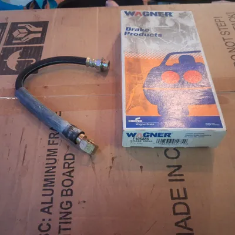
F106886
Fits 1982-1986 Pontiac Bonneville · 1979-1980 Pontiac Grand Am (1247 listed)
$14.99
View details
F110260
Fits 1982-1986 Pontiac Bonneville · 1982-1988 Pontiac Firebird (1974 listed)
$14.99
View details
F110420
Fits 1984-1991 Pontiac 6000 · 1982-1994 Buick Century (651 listed)
$14.99
View details
MC101254
Fits 1971-1980 Pontiac Bonneville · 1971-1980 Pontiac Catalina (3000 listed)
$99.99
View details
24780
Fits 2004-2008 Pontiac Grand Prix · 1997-2005 Buick Century (163 listed)
$16.99
View details
24812
Fits 2000-2005 Pontiac Bonneville · 2006-2011 Buick Lucerne (96 listed)
$18.99
View details
33051
Fits 1976-1977 Pontiac Astre · 1976-1980 Pontiac Bonneville (2380 listed)
$17.99
View details
33063
Fits 1982-1984 Pontiac 6000 · 1980-1984 Pontiac Bonneville (799 listed)
$21.99
View details
42994
Fits 1982-1986 Pontiac 6000 · 1980-1986 Pontiac Bonneville (2081 listed)
$12.99
View details
46138
Fits 1985-1987 Pontiac Grand Am · 1989-1990 Pontiac Grand Prix (157 listed)
$15.99
View details
46144
Fits 1998-2002 Pontiac Firebird · 1998-2002 Chevrolet Camaro (106 listed)
$19.99
View details
46234
Fits 1987-1991 Pontiac 6000 · 1988 Pontiac Grand Prix (423 listed)
$14.99
View details
46302
Fits 2001-2005 Pontiac Aztek · 2004-2005 Pontiac Bonneville (421 listed)
$14.99
View details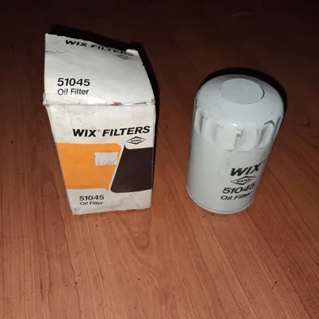
51045
Fits 1978-1979 Pontiac Firebird · 1977-1992 Cadillac DeVille (10 listed)
$15.99
View details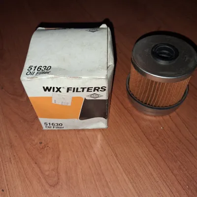
51630
Fits 1988-1991 Pontiac 6000 · 1988 Pontiac Fiero (469 listed)
$15.99
View details